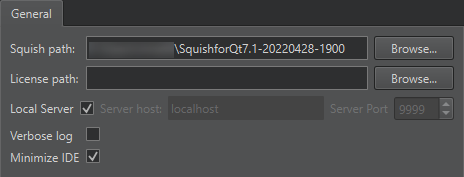

Connect to Squish Server
To create a connection to Squish Server:
- Select Preferences > Squish > General.

- In Squish path, specify the path to the Squish installation directory.
- In License path, specify the path to your Squish license file if it is not located in your home folder. For example, if you have a global installation with several users, where the license key is installed in the global folder.
- Select Local server to use a locally installed
squishserver.exe. To use a server running on another computer, clear the checkbox and specify the server address in the Server host and the port number in the Server port. If no port is specified, Qt Creator startssquishserverin a way that enables it to automatically select an open port. - Select Verbose log to include additional logging levels in the log output.
- Select Minimize IDE to automatically minimize Qt Creator when running or recording test cases.
See also Create Squish test suites, Enable and disable plugins, Manage Squish test suites and cases, Select Squish AUTs, and Squish.